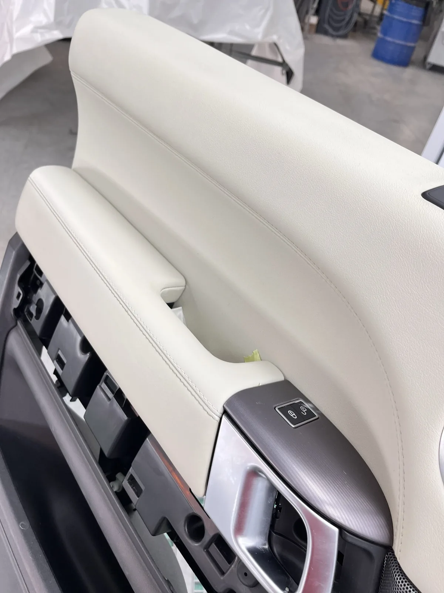

Eliminazione permanente di swirls, micro-graffi e difetti della carrozzeria per rigenerare il trasparente e donare una finitura specchiata e profonda.
La lucidatura auto professionale (paint correction) svolta presso Lorenzo Garage Detailing a Torreglia (Padova) non si limita a nascondere o riempire i difetti con cere temporanee. È un processo rigoroso di rimozione controllata delle imperfezioni superficiali presenti sul trasparente della carrozzeria.
Utilizziamo lucidatrici rotopassaggio e rotoorbitali combinate con tamponi specifici e paste abrasive graduate per eliminare i difetti senza compromettere la struttura del trasparente originale.

Pianificazione accurata per risultati impeccabili.
Richiede da 1 a 2 giorni lavorativi in funzione del livello di correzione scelto (1-step per brillantezza rapida, o multi-step per correzione profonda al 90%+ delle imperfezioni).
Il costo varia in base a molti fattori: le dimensioni della vettura, il colore, la gravità dei difetti e il livello di finitura richiesto. Ogni auto è valutata singolarmente. Contattaci per una consulenza gratuita e un preventivo su misura.
Confronta il risultato prima dell'intervento e dopo la correzione professionale.
La riduzione è minima e impercettibile (1-3 micron su 100+ totali). Utilizziamo strumenti di misurazione spessore prima di qualsiasi lavorazione per preservare l'integrità della vernice originale.
Elimina tutti i graffi che non superano lo strato del trasparente. Se il graffio è arrivato fino al fondo primer o alla lamiera, viene attenuato visivamente ma necessita di ritocco di verniciatura.